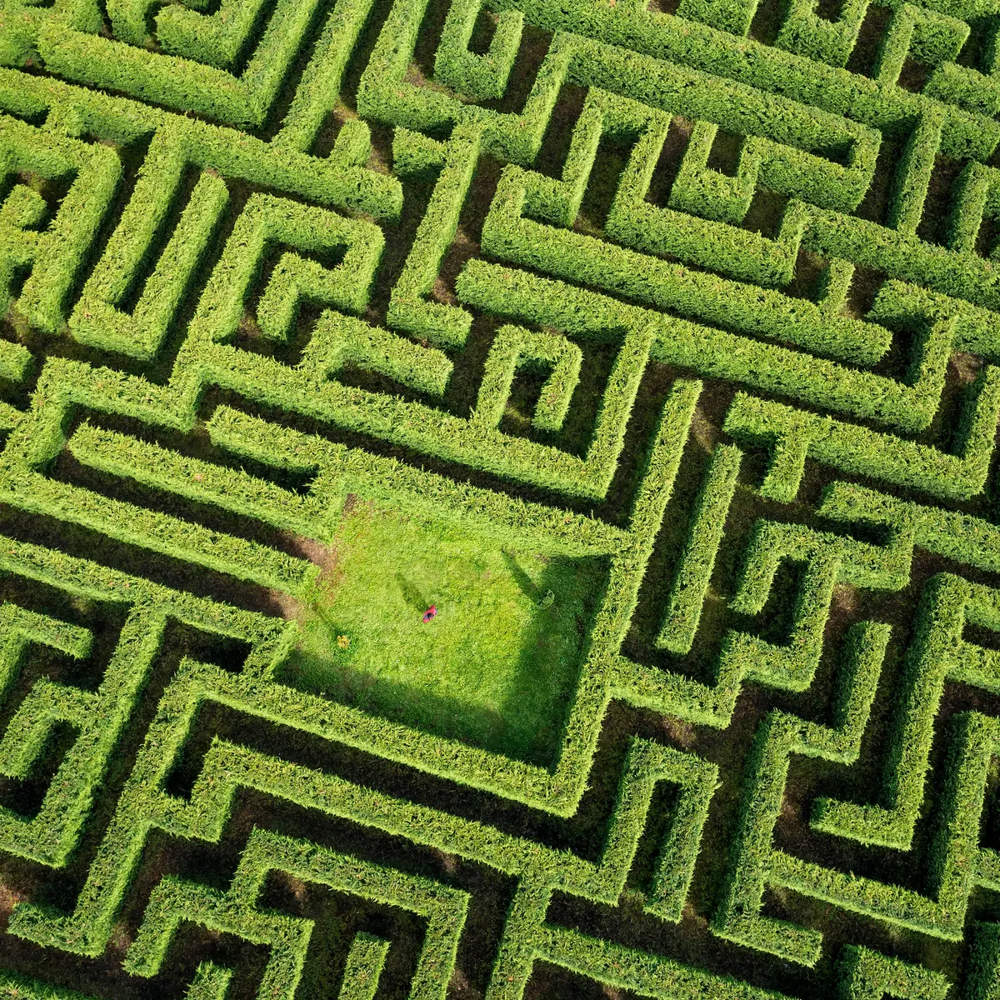
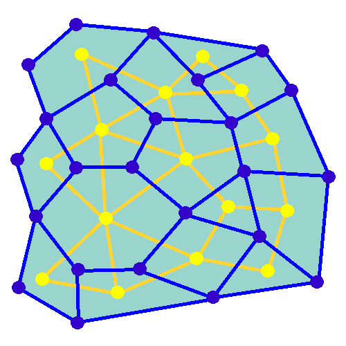

A maze is a path or collection of paths, typically from an entrance to a goal. The word is used to
refer both to branching tour puzzles through which the solver must find a route, and to simpler
non-branching ("unicursal") patterns that lead unambiguously through a convoluted layout to a goal.
The pathways and walls in a maze are typically fixed, but puzzles in which the walls
and paths can change during the game are also categorised as mazes or tour puzzles.

Generation
A maze can be generated by starting with a predetermined arrangement of cells (most commonly
a rectangular grid but other arrangements are possible with wall sites between them.
This predetermined arrangement can be considered as a connected graph with the edges representing
possible wall sites and the nodes representing cells. The purpose of the maze generation algorithm
can then be considered to be making a subgraph in which it is challenging to find a route between
two particular nodes.

Randomized depth-first search
This algorithm, also known as the "recursive backtracker" algorithm, is a randomized version of the
depth-first search algorithm.Frequently implemented with a stack, this approach is one of the simplest
ways to generate a maze using a computer.Starting from a random cell, the computer then selects a
random neighbouring cell that has not yet been visited. The computer removes the wall between
the two cells and marks the new cell as visited, and adds it to the stack to facilitate backtracking.
The computer continues this process, with a cell that has no unvisited neighbours being considered a dead-end.
When at a dead-end it backtracks through the path until it reaches a cell with an unvisited neighbour,
continuing the path generation by visiting this new, unvisited cell (creating a new junction).
This process continues until every cell has been visited, causing the computer to backtrack all the
way back to the beginning cell.We can be sure every cell is visited.